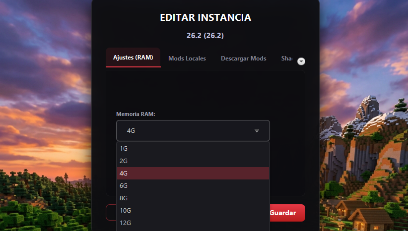

Categoría: Optimización
La cantidad perfecta de RAM para Minecraft (No cometas este error)
LFZ Team
•
9 de Agosto, 2026

Más RAM no siempre significa más FPS
Uno de los mitos más grandes en Minecraft es creer que si le asignas 16 GB de RAM, el juego irá a la velocidad de la luz. De hecho, ¡hacer esto puede causar que el juego se congele cada pocos segundos!
El problema del "Garbage Collector"
Java (el lenguaje en el que está escrito Minecraft) utiliza algo llamado Recolector de Basura. Si le das demasiada RAM, Java tardará mucho en llenarla, pero cuando finalmente intente limpiarla, causará un "tirón" (lag spike) masivo en tu juego.
La regla de oro para la RAM
- Minecraft Vanilla (Sin mods): 2 GB a 3 GB son más que suficientes.
- Con Shaders y algunos mods: 4 GB a 6 GB.
- Modpacks Gigantes (200+ mods): 6 GB a 8 GB máximo.
Cómo ajustarlo en LFZ Launcher
Ve a "Editar Instancia" y verás un control deslizante de Memoria RAM. El launcher nunca te dejará asignar el 100% de la RAM de tu PC, protegiendo así a Windows para que tu computadora no se bloquee.